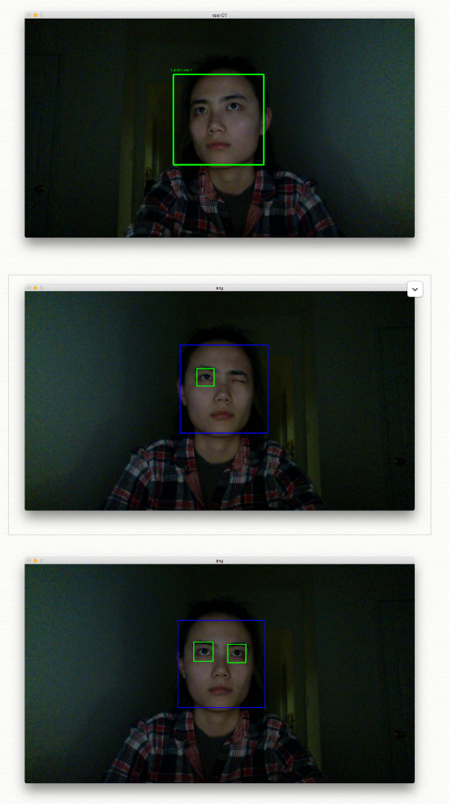
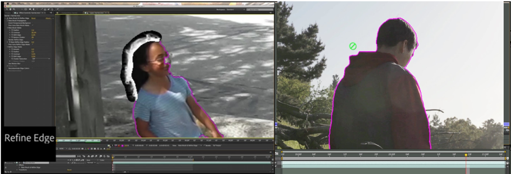
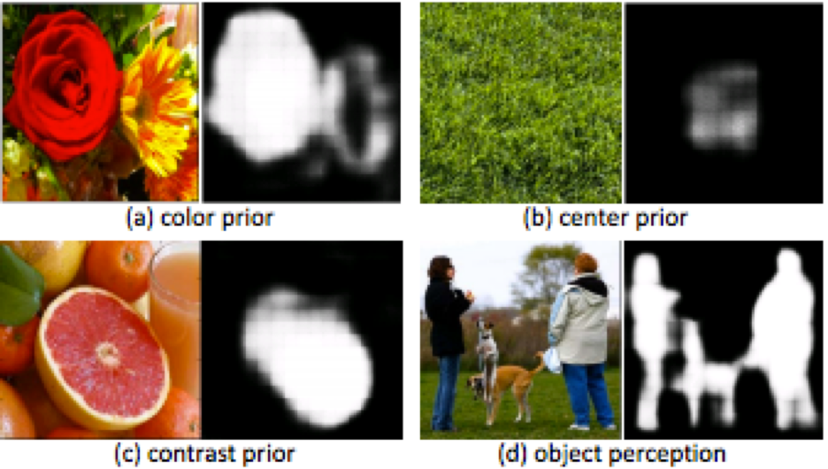
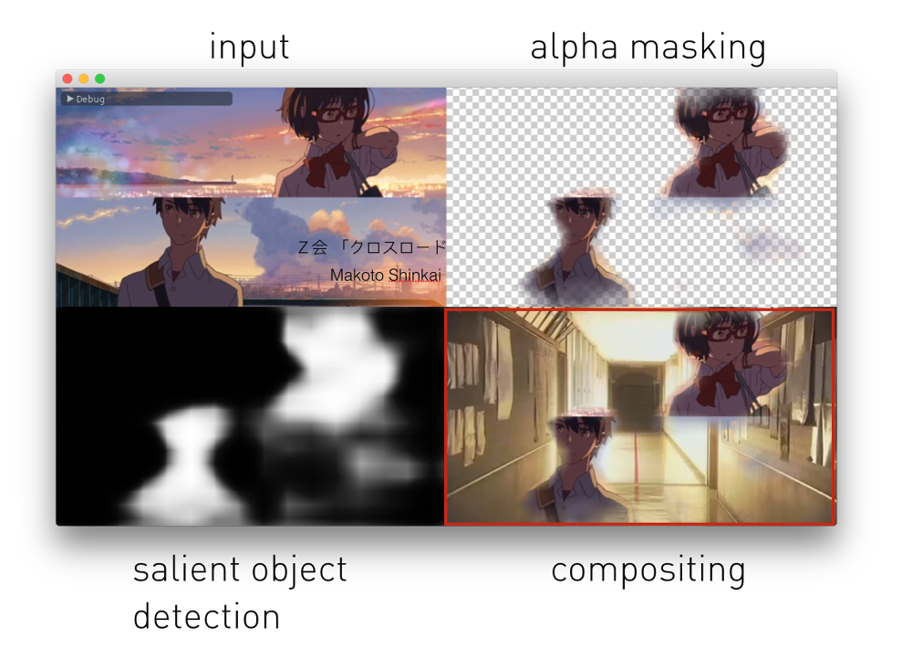
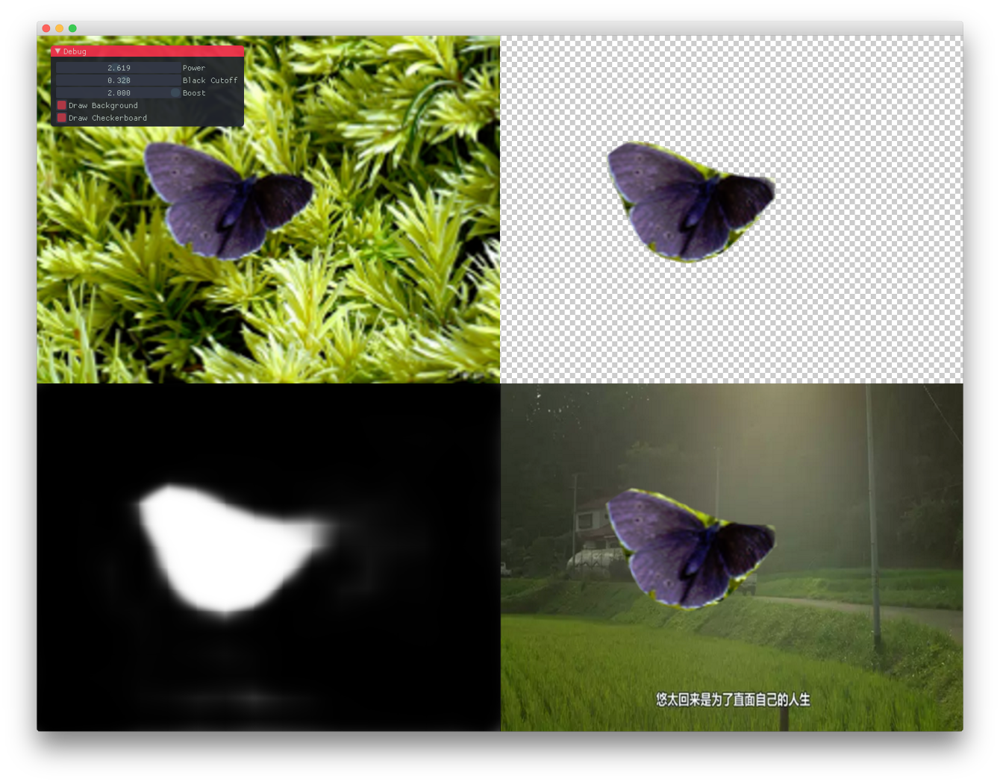
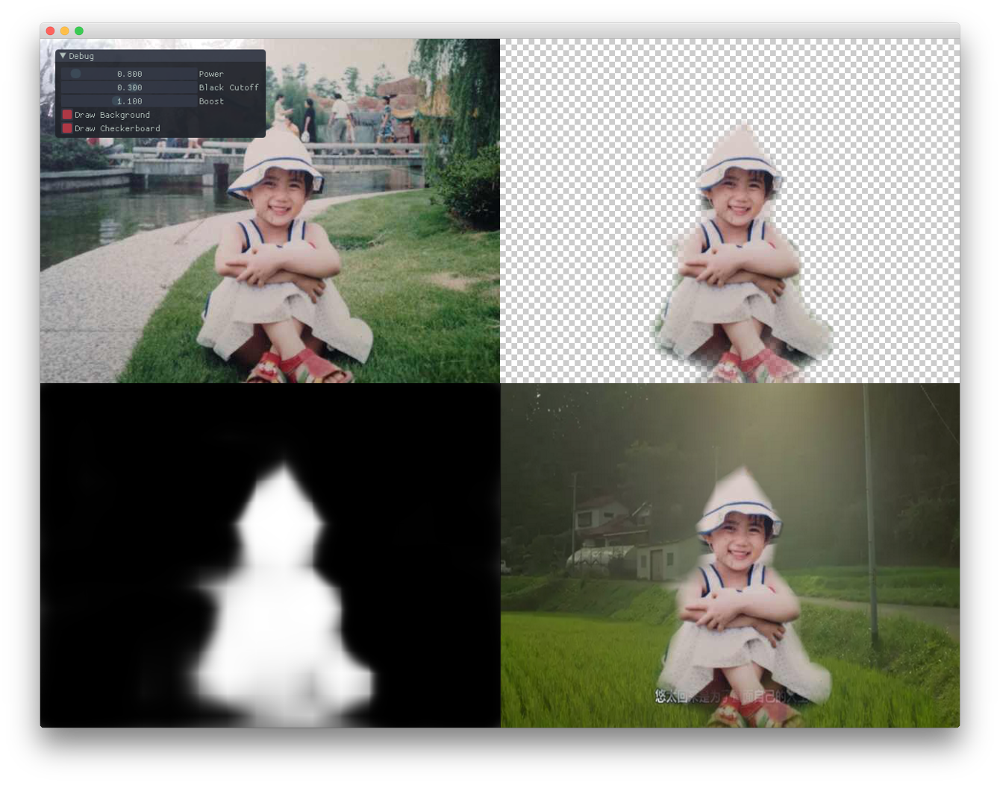

The CompBack is a video compositing tool for video with complex backgrounds. It is specifically designed to tackle the task of extracting salient moving objects from a video with complex background and then composite it with any given background in an automatic, accurate and fairly fast fashion.
I started my project by asking myself a question of how machine learning can be utilized to help address new possibilities in digital content editing and enhance the design experience, specifically making choices for designers in realtime, allowing them to test out and prototype with various semantic objects in their workflow. I want to develop a tool that can easily be learned by machine brains that will be able to facilitate the change of semantic objects within digital content for real world design workflow.
Most video editing tool today provide features to modify objects in video frame by frame based on pixel-level recognition. It is work-intensive and inefficient. The reason for that is that this type of work naturally lies in the post-production stage, aimed at the end product. However, with artists nowadays empowered with technology that has more speed, options and efficiency, this current process is antiquated and leaves little opportunity for quick prototyping and testing in the early stages of production, therefore limiting the creativity of video makers.
What I have explored is a way to bring the workflow normally found in the final stages of the editing process, closer to the production stage, allowing creators to composite different raw video footages together without having to pre-arrange the video shooting within a specific environment, such as in front of green screen color background, or any background hold static information.
In depth, this is a prototyping tool that provides an alternative approach that traditional video compositing feature found in professional video editing tools(Final Cut pro, Adobe Premiere, AfterEffect) provide but under certain limitation prior in the editing process. My program deploys a salient object detection framework—deepSaliency, developed by LIiming Zhao (http://www.zhaoliming.net/research/deepsaliency) to perform accurate subject detection and treat the results as foreground objects and composite them with other background videos. This dynamic detection capacity on raw video footage sources omits the requirement of having to set up static background for contracting the moving foreground objects and further extraction process.
The tool I have in mind will specifically address on the word simplicity by providing an automatic workflow. Firstly, users will not limit themselves with complex green screen setup, they can use any kind of video, including those with moving background. Secondly: The compositing process will be fully automatic since it detects outstanding objects with computer vision approaches. Thirdly: the entire compositing work will happen in real-time with GPU acceleration.
Those being said, in order to achieve the things i just mentioned, i need to first tackle some problems, the first one being how do i detect shapes that are not regular. Some CV functions to track objects do a decent job on tracking the center position and bounding box of the object, but it does not provide pixel level boundary info that can be used as an alpha mask.
And secondly, how do i let the computer know what stand out all the time and how do i keep the track of them. Many may start to think about using the rotoscoping function in adobe AfterEffect, which does detect boundary in the pixel level, but the problem is that it’s done manually by adjusting rotoscoping area frame by frame. And the function will lose the accuracy when camera angle changes.
Thus I come to a conclusion that what i need is a program that knows the semantic information of the objects rather than just their center position or their pixel values.
After some research, I came across a machine learning neural network model called DeepSaliency, it gives a satisfying result on overcoming the limitation of detecting arbitrary geometry against complex background.
This example is provided with the model, and as you all can see, it gives a reliable mask with rich edge information.
It detects objects in a high accuracy regardless background information to be simple or complex based on the knowledge learned from its training data.
Now let's talk about my developing process. At first, I set up the Caffe deep learning framework in python, used the DeepSaliency model to run the salient object detection and got a very accurate alpha mask of myself.
Then I modified the program to work with videos.I ran the salient object detection on the video frame by frame, using Caffe CPU mode, it takes about avg 2 seconds to analyze one frame. Here is the result showing the alpha mask video in parallel with its original raw video.
Next, I moved to the C++ platform in order to leverage the GPU to do faster compositing using shaders. It proofed to be 10 times faster than the previous python program. The program works like first to perform salient object detection, and then get the alpha mask result, finally to composite the result onto a given background.
  Once I have the shader compositing workflow, I moved to write a more sophisticated program that works better on videos and has a GUI.
While testing with GPU acceleration, the program achieved a nearly real-time performance where it processes 4-6 frames per second, showing the potential for quick prototyping use.
An example of compositing swimming fishes in the ocean.
Another example of compositing human figure with outer space visual effect.
The GUI has a similar layout to those professional video editing softwares, and provides convenient functions to the users. For example, users could: right click to easily load both foreground and background videos
switching between different preview modes including background and checkerboard compositing.
it also provides some sliders for users to control the parameters of the shader, which does image processing on the alpha mask, generating better looking edges.
Last but not least, it allows users to jump to a specific frame by scrubbing the timeline.
However my current development also has some problems.
First, as shown in the examples, the alpha masks generated by the machine learning model are usable, but not precise enough. I believe it can be fixed by using some CV algorithms in conjunction.
Second, the salient object detection is inaccurate because sometimes it confuses video content that has the similar colors across the objects, But i think this problem can be improved by training the model with massive video data.
Third, current GPU implementation in Caffe causes random crashes. And the solutions to that is to try Caffe 2 that just came out last week, or simply switch to other ml frameworks like tensorflow.